Метод калибровки
Существует два метода послепродажной калибровки кругового обзора: ручная калибровка и калибровка по имитации производственной линии, достаточно выбрать один из них, однако перед калибровкой необходимо выполнить обновление камеры (изображение является схематичным, перейдите по соответствующему для вашей модели автомобиля пути).
一、手动标定方法和步骤
-
Подготовьте площадку для калибровки в соответствии с требованиями к участку, установите автомобиль в зоне калибровки и убедитесь, что все камеры автомобиля не загромождены, давление в шинах в норме, передний и задний бамперы установлены на место, зеркала заднего вида разложены, а все двери надежно закрыты.

Элемент проверки
№
Элемент проверки
Требования
1 Камера
Камеры спереди\сзади\слева\справа не загромождены, без пыли
2 Шина
Давление в шинах в норме
3 Передний и задний бамперы
Передний и задний бамперы установлены на место и затянуты
4 Зеркала заднего вида
Левое и правое зеркала заднего вида находятся в естественно разложенном состоянии
5 Двери
Двери закрыты до конца
6 Дверь задка
Дверь багажника закрыта до конца
-
Включите систему панорамного обзора 360°, подключите диагностический прибор к автомобилю через разъем OBD-II, проверьте и убедитесь, что программное обеспечение диагностического прибора обновлено до последней версии;
-
Нажмите на интерфейс диагностического прибора, перейдите в раздел …\Changan Automobile\Qiyuan Q05\THU\Версия диагностических данных\Специальные функции\Запрос на обновление камеры, нажмите кнопку обновления камеры, подтвердите переход к обновлению камеры; после завершения обновления камеры на экране не появляются подсказки о неисправностях, в панорамном интерфейсе нет перевернутых изображений — это означает, что обновление камеры прошло успешно, после чего можно приступать к послепродажной калибровке;
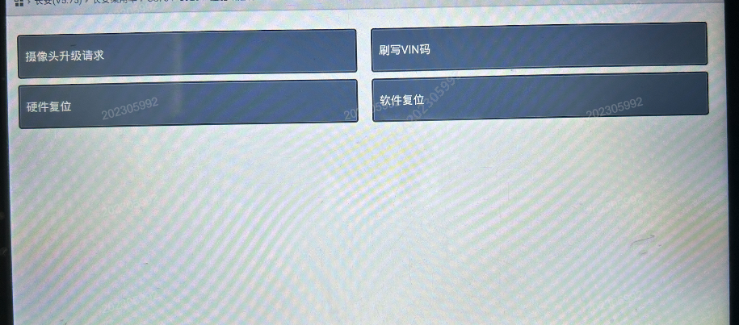
-
Включите зажигание автомобиля, откройте панорамное изображение и нажмите кнопку 3D для входа в интерфейс панорамного 3D-обзора, последовательно нажмите 3 раза в правый верхний и правый нижний углы экрана, появится всплывающее окно, нажмите кнопку «Ручная послепродажная калибровка 1.2 метра», во время калибровки не перемещайте автомобиль, на дисплее мультимедийной системы отобразятся меры предосторожности, нажмите «Подтвердить»;
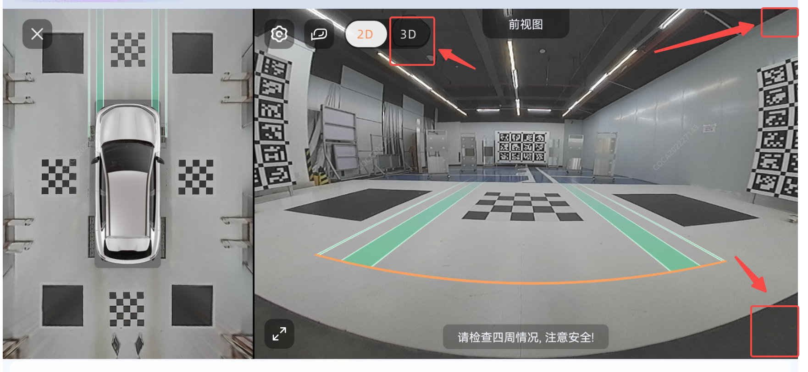
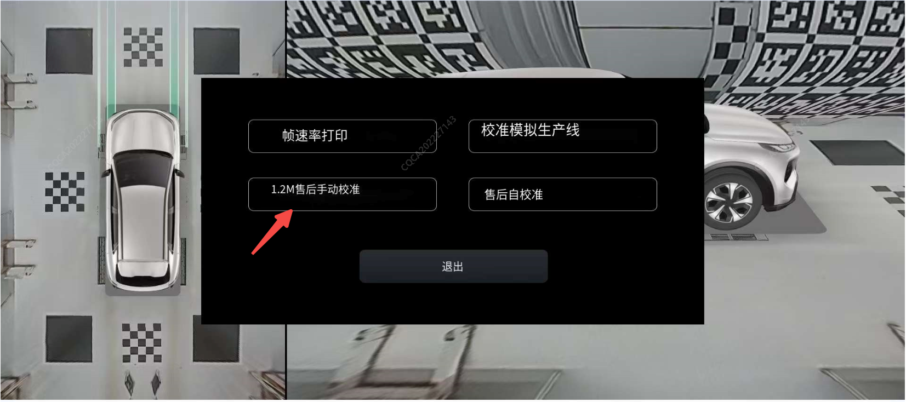

-
Нажмите «Точка 1» (или «Точка 2/3/4/5/6/7/8») для входа в интерфейс регулировки точек, выбранная точка на дисплее мультимедийной системы изменит цвет на оранжевый;
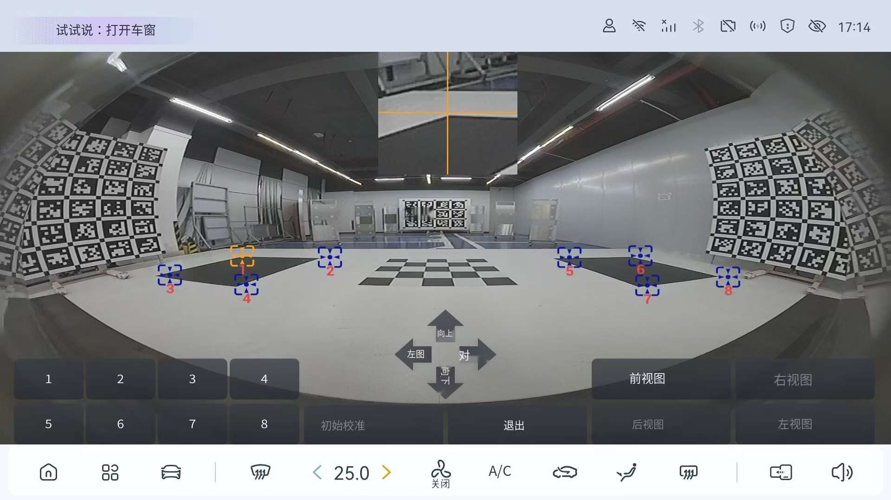
-
Нажмите «Вверх» (или «Вниз / Влево / Вправо»), выбранная точка переместится вверх (или вниз / влево / вправо) на один пиксель; регулируя положение с помощью кнопок вверх, вниз, влево и вправо, убедитесь, что центр перекрестия совпадает с углами соответствующего калибровочного блока;

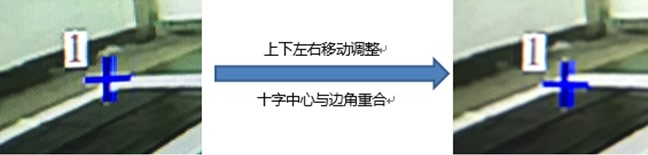
-
Установив «Точку 1» в нужное положение, нажмите «Назад», выберите «Точку 2» и т. д., повторите шаг 5, переместив все 8 точек в положения углов соответствующих калибровочных блоков.
Примечание: при выборе «Точек 5/6/7/8» необходимо сначала нажать «Перейти к точкам 5/6/7/8», а затем выполнять выбор точек.

-
Завершив перемещение всех точек для «Вида спереди», нажмите «Назад», выберите «Вид сзади» и т. д., повторите шаги 4/5/6, чтобы гарантировать, что все точки на четырех видах (спереди/сзади/слева/справа) перемещены в соответствующие угловые положения.

-
Переместив все точки на четырех видах (спереди/сзади/слева/справа) в соответствующие положения, нажмите «Начать калибровку» и подтвердите; на дисплее мультимедийной системы отобразится процесс калибровки, и примерно через 1 минуту появится подсказка «Калибровка успешна», что означает завершение работ по калибровке;
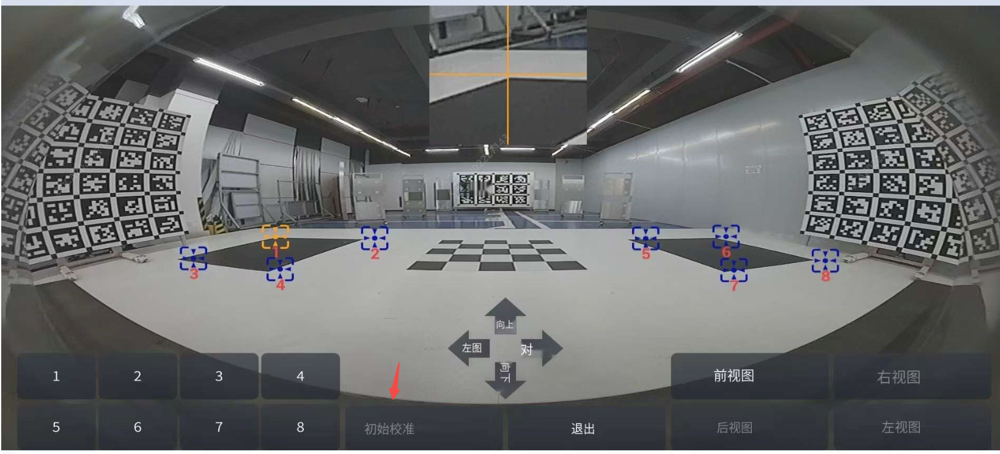
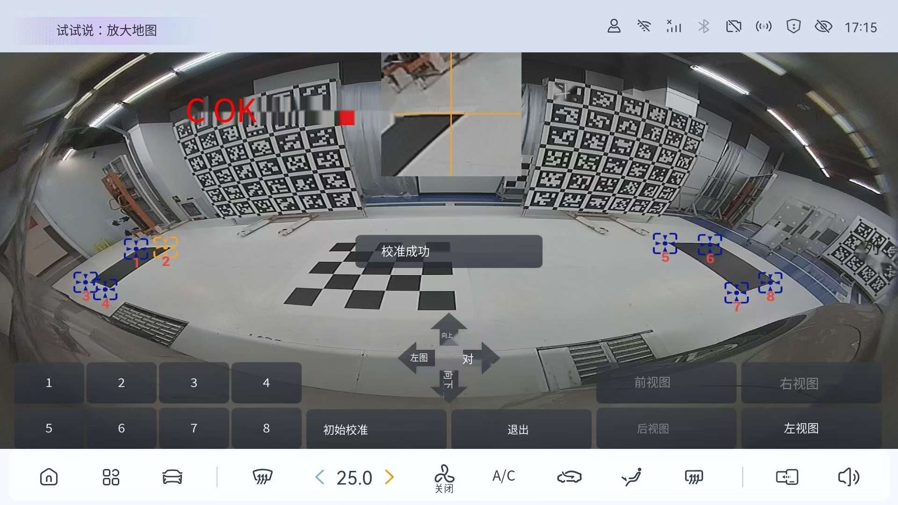
-
После перезапуска системы панорамного обзора 360° проверьте результаты калибровки, убедившись, что на панорамном изображении сшивания калибровочные блоки не имеют эффекта наложения (двоения); если результаты калибровки неудовлетворительны, можно повторить предыдущую процедуру калибровки, скорректировать положение некоторых точек и выполнить калибровку заново.
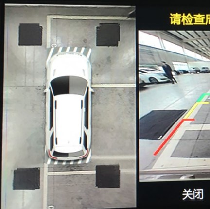
二、售后模拟产线自动标定方法和步骤
-
Выполнив подготовку площадки для калибровки и обновление камеры согласно вышеуказанным шагам 1, 2 и 3, включите зажигание автомобиля, откройте панорамное изображение и нажмите кнопку 3D для входа в интерфейс панорамного 3D-обзора, последовательно нажмите 3 раза в правый верхний и правый нижний углы экрана, появится всплывающее окно, нажмите кнопку «Калибровка по имитации производственной линии», во время калибровки не перемещайте автомобиль, после того как на дисплее мультимедийной системы отобразится сообщение об успешной калибровке, выйдите из режима

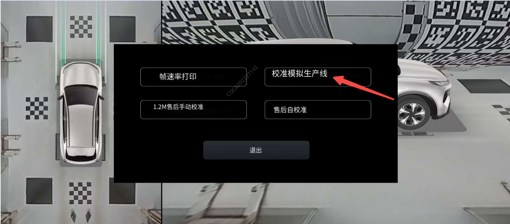
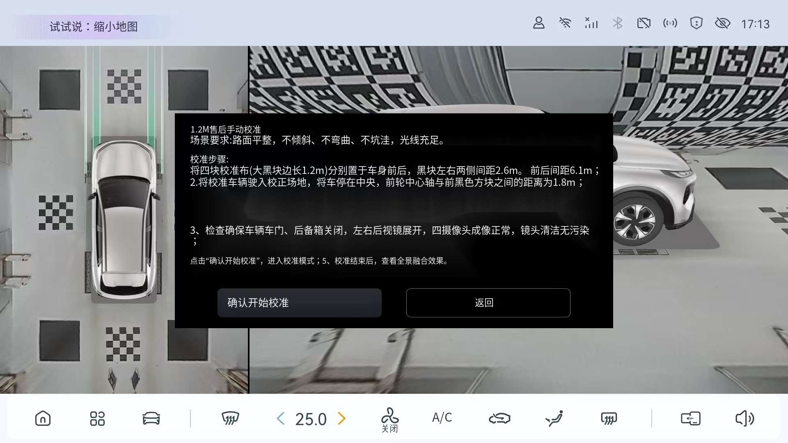
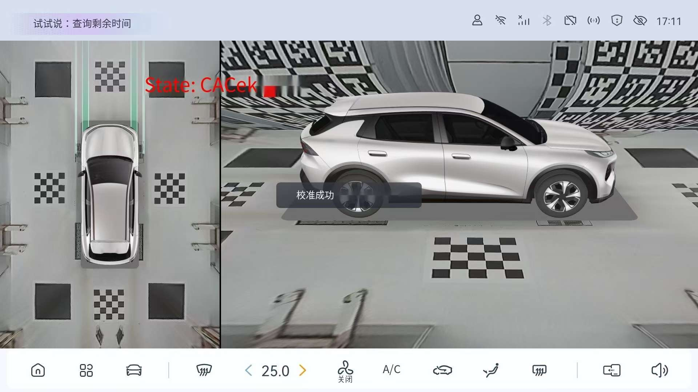
После перезапуска системы панорамного обзора 360° проверьте результаты калибровки, убедившись, что на панорамном изображении сшивания калибровочные блоки не имеют эффекта наложения (двоения); если результаты калибровки неудовлетворительны, можно выполнить калибровку заново.